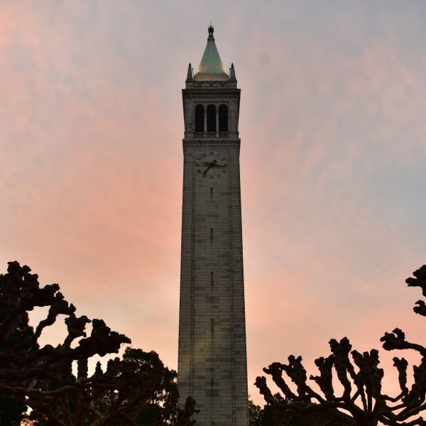
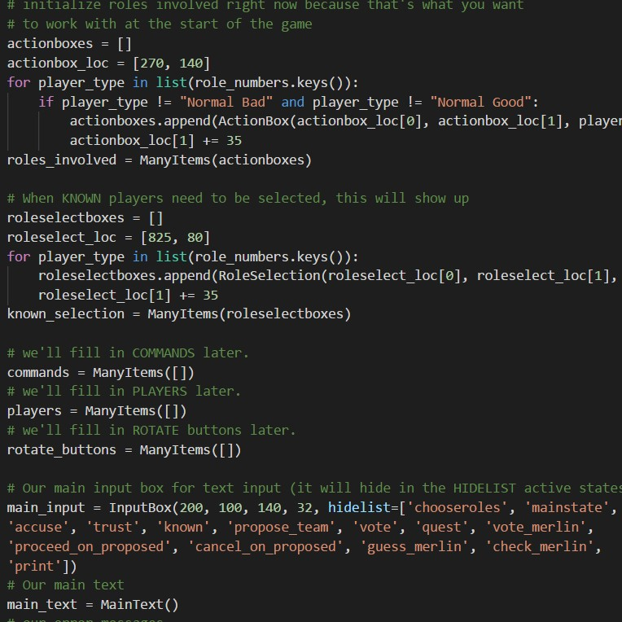
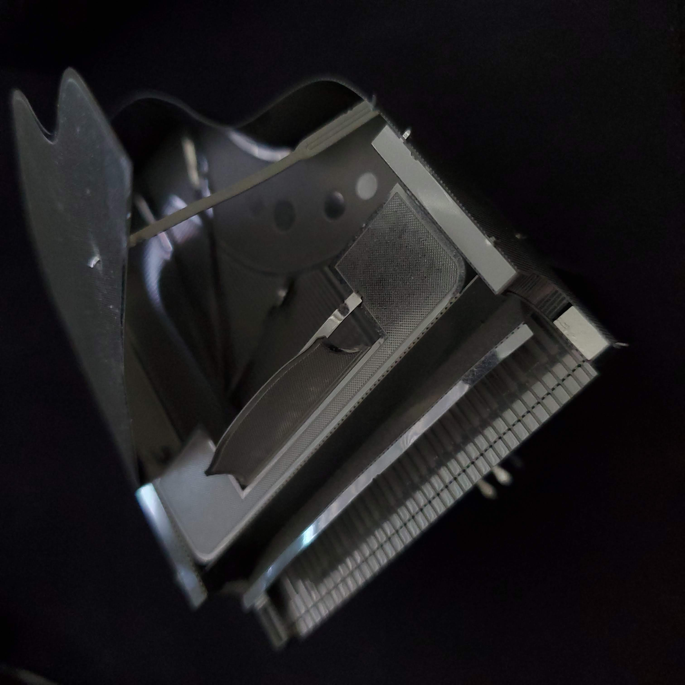

My name is Paul Ngo. I am a UC Berkeley senior double majoring in
Electrical Engineering & Computer Science and Bioengineering.
I enjoy working on mechanical engineering, electrical engineering, and
computer science projects. I have a background in music, computer science, and
robotics. I enjoy photography and board games in my free time.

Campanile at sunrise in the spring
Background and Extracurricular
I grew up in Davis, California. attending Davis Senior High school and graduating in 2017.
My community in Davis inspired my passion for the STEM field (engineering, science, etc.), as
well as my interest in education and tutoring.
In middle school and high school, I participated in NJHS (National Junior Honor Society)
and CSF (California Scholarship Federation). I gained a lot out of my time as a member of
Music From Home, a student group which organized musical recitals for an elderly home.
In 2013, I joined the Davis FRC (First Robotics Competition) team,
Team 1678: Citrus Circuits. During
my
four years there, I gained machine shop and safety experience, electrical engineering
skills, and began to learn my first programming language - Python. I am happy to have been a
part of Team 1678's FRC world champion title in 2015.
I became the electrical sub-team lead in 2016.
I attended UC Berkeley starting in Fall 2017.
I was the drafting team lead for the
Steel Bridge Competition Team at UCB,
and an engineering co-lead for
Bioprinting@Berkeley. I tutored
for the
Residential Halls Tutoring program in Physics.

Code for Avalon AI
Projects
In and outside of class, I enjoy putting together programs, games, and small crafts!
I love working on building things and learning new technologies and methods. Here are some of my
favorite projects!
Color Control (personal project)
Fall 2018
Color Control was a project which allowed me and my apartment roommates to control lights in the
house through a webapp and
Google Home. We wired LED lights using a transistor control circuit
for control with Raspberry Pi, used Python to control LED lights with RGB channels using PWM and
OS workarounds for more advanced functionalities, and implemented a Flask server to handle GET
requests from Google Home with IFTTT Webhooks, and POST requests from an interactive webapp.
BearMaps (class project)
Summer 2018
BearMaps was developed for a computer science class at UC Berkeley. I developed a map rasterer
using OpenStreetMaps to represent the city of Berkeley in a dynamic web app, used the same data
to build a traversable graph, giving directions using the A* search algorithm, and used tries to
autocomplete location searches, and k-d trees to search for nearest neighbor points.
Gitlet (class project)
Summer 2018
Gitlet, developed for a computer science course (COMPSCI 61B), is a version control system
modeled off of GitHub. It has a majority of the features that GitHub does and operates via
terminal commands. Gitlet was written in Java with two project partners at UC Berkeley.
Avalon AI (personal project)
Fall 2018
Avalon AI is a python-based computer system that plays a social deception game, called
Avalon
(this is an amazon.com link).
It stores data in a SQL database and uses heuristics to deduce character roles (which is an
essential part of the game). It uses pygame as a UI for entering data about game actions and
game state.
Dual Extrusion for Bioprinting (club project)
Fall 2018
"Dual Extrusion for Bioprinting" received a Jacobs Innovation Catalyst Spark Grant in the Fall
of 2018. The goal of the project was to develop a modular dual extrusion head for bioprinting
gels and cell materials. The head would be able to be mounted on a conventional 3D printer.
Though still in progress, an initial prototype demonstrates two gels which can be extruded
independently and in a controlled mix, while on the printer and controlled entirely using
open-source slicing software.

Metal piano model
Hobbies
My free time is always a time to learn, and to have fun while doing so!
Whether it be in-person board games, photography, or stratetic games online, I'm always ready to
have some fun!
Board Games
I'm always ready for a game of Risk, Monopoly, Avalon, chess, or the like! I'm always down for a
game!
Photography
I love taking environmental photos with my DSLR, and am practicing candids and portraits.
Insta: @pngotos
Music
I enjoy playing classical piano and theme songs from films I watch.
Smash Ultimate, Valorant, League, Runeterra
azureorbit#2604 :)
Chess
Experience
Correlia Biosystems (2019-Present)
I participated in the
QB3 Undergraduate Research Biotech Internship Program
in the summer of 2019.
Through QB3, I met amazing mentors and friends at
Correlia Biosystems.
At Correlia, I did software engineering work, developing code for internal and MVC use.
I primarily worked on image analysis and data analysis, but also contributed to laboratory work.
I'm continuing to work with Correlia as we launch our first instrument by the end of 2020!
Amazon (May 2020 - October 2020)
I am excited to join the Amazon AWS team for a summer internship!